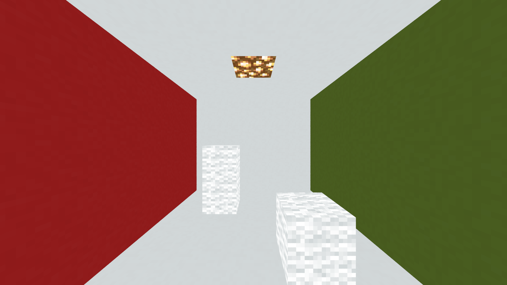
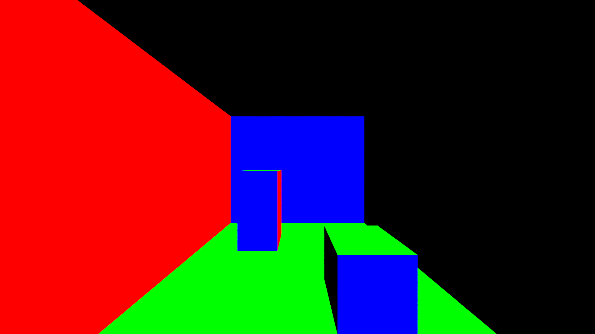
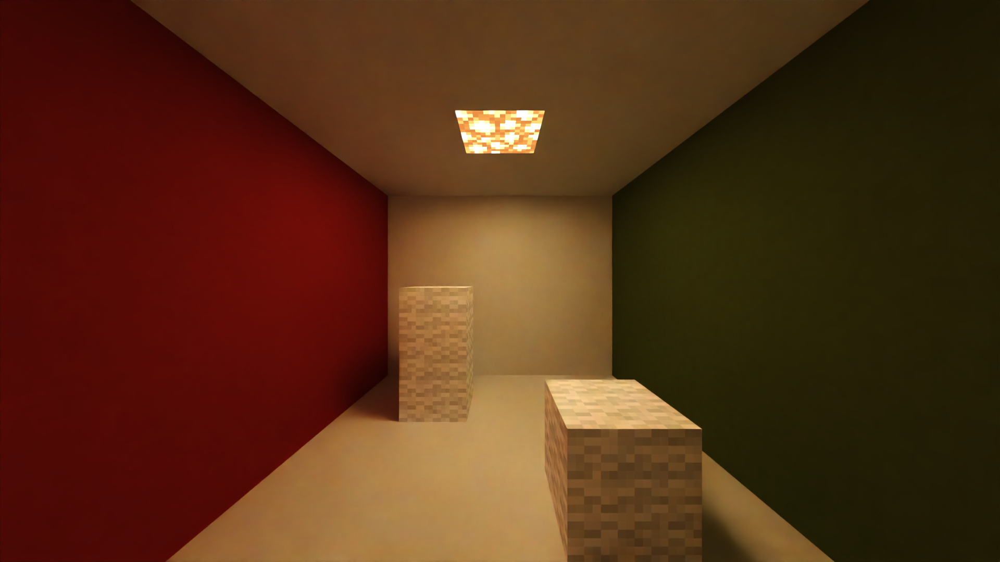

Denoising¶
Image noise is one of the consequences of the path tracing rendering method; however, there are methods to remove noise from the image, a process which is called denoising.
More on SPP¶
As stated in the Samples and Noise article, a path tracing renderer renders an image by repeatedly tracing a random ray through the scene for each pixel, and generating a sample value for each ray traced. The average of every sample value for each pixel is used to calculate the color value for that pixel. Due to the randomness of path tracing, the image can appear noisy at first, but, over time, as more samples are generated, the noise will decrease. This is the simplest method to denoise an image; however, the greatest problem with this approach is that a doubling of the image SPP is required to reduce the noise by half. The time required to render double the current SPP to reduce the noise by half increases exponentially as the current SPP increases (see this figure and this figure for examples of this effect), so this is not a viable solution for many people. However, other denoising methods that do not require as much time and energy exist.
Artificial Intelligence-accelerated Denoising¶
While most denoising methods use a basic blurring approach, AI-accelerated denoising software uses a different approach called deep learning. With this approach, the software is trained to distinguish between image signal and image noise in images rendered to a wide range of SPP values. This range extends from 1 SPP to the SPP of an image that is almost fully converged. While the denoising software can operate solely on the noisy input, the denoised results can improve greatly with the utilization of Arbitrary Output Variables (AOVs), which provide additional information to the software. Some AOVs related to denoising are listed below.
-
Albedo: The Albedo AOV contains the pure color information of the scene independent of lighting.
-
Normal: The Normal AOV contains information about the normals of the surfaces of objects in the scene.
Chunky does not have native support to render such AOVs, but such support can be added through plugins. One such plugin is the Denoising Plugin, which not only adds support for rendering the Albedo AOV and the Normal AOV, but also can automatically denoise the image by using Intel Open Image Denoise, which runs on any 64-bit CPU that supports SSE 4.1, or on Apple Silicon. An alternative to Intel Open Image Denoise is the NVIDIA AI Denoiser, which runs on an NVIDIA GPU of Maxwell architecture or newer, with a driver version of 465.84 or greater. Denoising with this tool must be done manually, however.
Figure 1: Denoiser plugin AOVs and denoised result
|

Albedo AOV |

Normal AOV |

Scene rendered to 64 SPP |

Denoised image |
{kind=link}
{kind=link}
{kind=link}
An important aspect of AI-accelerated denoisers is that they cannot be expected to denoise images perfectly. If the denoiser is not provided the AOVs, or the noisy image is too challenging for the denoiser to denoise effectively, then the denoised image may contain undesired visual artifacts, such as deformed blocks and blurred textures. This gives such denoised images an "oil painting" effect, as shown in Figure 2. To improve the denoised output, provide the AOVs, if possible, and render the image to a higher SPP. The higher the SPP the noisy image is rendered to, the better the denoiser will perform.
Figure 2: The "oil painting" effect in a denoised image
{kind=link}
Extracting Lighting Feature Images¶
It is possible to extract separate lighting feature images from the scene through changing of certain settings in Chunky. The separate images can be combined during the post-processing to reproduce the final render. The main reason for separating the lighting feature images is to denoise only the images that contain the most noise. Having control over which lighting feature images are denoised can save much time, since most denoising methods make use of a destructive blur, which can reduce fine detail. Denoising only the most noisy images and then combining them helps to preserve detail which would likely be lost if the whole image were simply denoised. More information about this denoising method is located in jackjt8's Guide to Chunky - Denoising.
Below are listed the control values required to obtain renders of certain lighting features.
-
Sunlight: Enable Enable sunlight, Disable Enable emitters, set Sky mode to Black, and set Fog density to 0.
-
Sky light: Disable Enable sunlight, disable Enable emitters, set Sky mode to the desired value, and set Fog density to 0.
-
Emitter light: Disable Enable sunlight, enable Enable emitters, set Sky mode to Black, and set Fog density to 0.
-
Fog only: Disable Enable sunlight, disable Enable emitters, set Sky mode to Black, and set Fog density to the desired value.
{kind=link}
{kind=link}
{kind=link}
{kind=link}
{kind=link}